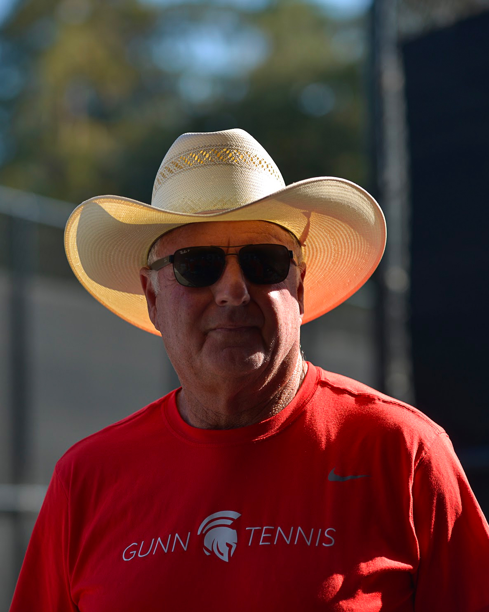

|
Jim has extraordinary background and experience in the tennis world. He has been a head pro for 31
years, coaching professional, college, and high school tennis players. Another facet of Jim's expertise
lies in the sports vision-training program that he innovated for professional and amateur athletes. This
included work with the San Francisco 49ers, Houston Astros, and several internationally ranked tennis
professionals. Currently, Jim is writing a book on tennis and is involved in research to write and
produce books and videos that explain his in-depth, unique approach to improving hand-eye coordination
and depth perception through proper vision techniques. Jim has said, "I will continue coaching until I
find a better job, and since there is no better job, tennis has become a life-long occupation," which
truly embodies his passion for the game.
|
 |